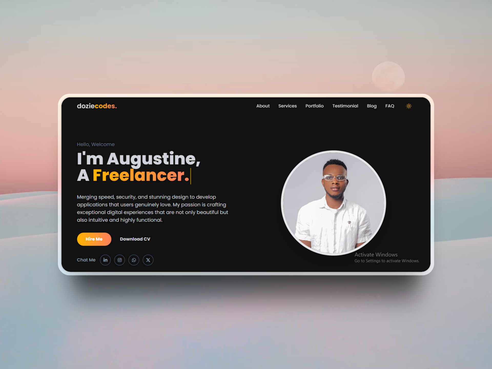

How I Built My Portfolio: A Step-by-Step Guide
A developer's portfolio is more than just a resume—it's a living showcase of your skills, style, and process. I often get questions about how I built my own site, so I decided to pull back the curtain and share a step-by-step guide. My goal was to create something clean, professional, and interactive from scratch, using a modern tech stack.
Step 1: Planning and Design
Before writing a single line of code, I started with a clear plan. I was heavily inspired by my previous portfolio but wanted to give it a more modern, spacious, and animated feel. The main goals were:
- A Single-Page Layout: For a smooth, uninterrupted user experience.
- A Clean Aesthetic: Using a dark mode default with a professional font (Poppins) and a striking yellow accent color.
- Interactivity: Incorporating animations and effects to make the site feel alive.
I sketched out the layout of each section (Hero, Services, About, etc.) to establish a clear visual hierarchy before moving on to the code.
Step 2: The Tech Stack - Simplicity and Power
I chose a simple but powerful stack for this project. Since it's a static site, I didn't need a complex backend or a heavy framework. My core tools were:
- HTML5: The foundation of the site, structured semantically.
- Tailwind CSS: For all the styling. Using a utility-first framework allowed me to build a completely custom design without writing custom CSS files. It's incredibly fast for prototyping and building responsive layouts.
- JavaScript: To power all the interactive elements like the theme toggle, testimonial slider, mobile menu, and animations.
Step 3: Building the Key Components
With the plan and tools in place, I started building the site section by section. The hero section was crucial to get right, so I focused on the auto-typing effect to immediately grab attention. For the services and portfolio sections, I used a responsive grid layout that adapts perfectly from mobile to desktop screens.
For interactive elements like the FAQ accordion and testimonial slider, I wrote custom JavaScript functions. This keeps the site lightweight, avoiding the need to import heavy libraries for simple tasks.
Step 4: Adding Polish with Animations
A static page can feel flat. To add a layer of professional polish, I used the Animate On Scroll (AOS) library. This lightweight library makes it incredibly easy to add subtle fade-in, slide-in, and zoom-in effects as the user scrolls down the page. I applied different animations and delays to various sections to create a dynamic and engaging experience.
Conclusion: A Portfolio is a Journey
Building your own portfolio is one of the most rewarding projects a developer can undertake. It's a chance to consolidate your skills, express your personal style, and create a powerful tool for your career. My approach focused on a clean design, a modern and efficient tech stack, and a focus on small details and animations to create a polished final product.
Have questions about the process? Feel free to reach out!